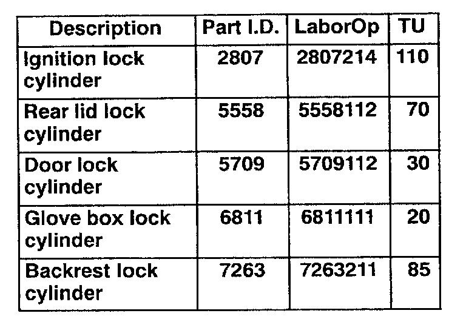

Sidewinder Key and Locks - Ordering and Warranty Claim
Number:
00-01
Group:
57
Date:
Feb.10, 2000
Subject:
Sidewinder Key and Locks, Ordering and Warranty Claim information
Model(s):
All with Sidewinder Keys
Supersedes T.B. Group 57 Number 99-01 dated May, 26,1999
Condition:
Customer requires additional sidewinder key or an ignition, door, glove compartment, or rear lid lock cylinder must be replaced.
Service:
CAUTION! Verify proof of ownership before issuing a replacement key!
Replacing or obtaining additional sidewinder keys from your Parts Depot

Sidewinder Keys (which are cut from the key code) can be ordered from your Parts Depot.
Replacement sidewinder keys (which are cut from the key code) must be ordered through the "NEW" Dealer Parts Order Entry System.
The key code from the tag or the VIN number must be entered in the comments section.
Note: In most cases the replacement key will be shipped to your dealership the next day
If the Parts Depot or the selling Dealer is unable to obtain the proper key code, a complete lock set will have to be installed.
Vehicles with immobilizer must have ALL keys adapted to the vehicle when a new key is adapted (see Repair Manual, Electrical Equipment Group O1 "On Board Diagnostic OBD" Immobilizer, Adaptation of vehicle keys).
Sidewinder key, cutting at Dealership
Sidewinder keys can also be cut using the Framon FRS D1 key cutter and the customer's original key.
Note: Always follow manufacturers instructions, CAUTIONS and WARNINGS when using the Framon FRS D1 key cutter
Vehicles with immobilizer require a specific key designed to work with the immobilizer system! Always check with your Parts Dept to obtain the correct key
Vehicles with immobilizer must have ALL keys adapted to the vehicle when a new key is adapted (see Repair Manual, Electrical Equipment Group O1 "On Board Diagnostic OBD" Immobilizer, Adaptation of vehicle keys).
Lock cylinder, ordering procedure
If an ignition lock cylinder, door lock cylinder, glove compartment lock cylinder, or rear lid lock cylinder requires replacing, a 2 step process is required:
1. Order (from your Parts Depot) a loaner lock cylinder which does not match the current key combination of the vehicle. The customer will (temporarily) have two keys.
Note: Vehicles with immobilizer will require a separate ignition lock cylinder assembly with keys.
The temporary ignition lock cylinder ignition key MUST be adapted to the vehicle (see Repair Manual, Electrical Equipment Group O1 "On Board Diagnostic OBD" Immobilizer, Adaptation of vehicle keys).
2. At the same time you must order via RED ORDER (through your Parts Depot) a lock cylinder (special Part No. starting with 107.XXX) for which you must provide the key code or the VIN.
This lock cylinder will be re-coded to the original key code and will arrive at your dealership in approximately 3 to 4 weeks.
Note: After new ignition lock cylinder is installed ALL keys MUST be adapted to the vehicle (see Repair Manual, Electrical Equipment Group 0 1 "0n Board Diagnostic OBD" Immobilize,; Adaptation of vehicle keys).
Loaner lock cylinder, Warranty claim information
If necessary, for vehicles within the applicable warranty, where a lock cylinder needs replacement due to a defect in materials or workmanship:
- Submit a warranty claim for the part and labor for installing the (temporary loaner) lock cylinder.
Note: The (temporary loaner) lock cylinder should be claimed under warranty only ONE TIME
Retain the (temporary loaner) lock cylinder and key for future use.
Future warranty claims for repairs requiring the installation of this (temporary loaner) lock cylinder should be submitted for labor only, and only when needed due to a defect in material or workmanship.
Lock cylinder, Warranty claim information
- When the (new) matched lock cylinder is installed, submit a second warranty claim for parts and labor.

When procedure applies to vehicles within the New Vehicle Limited Warranty, use chart.